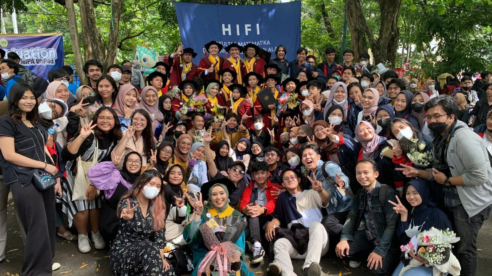
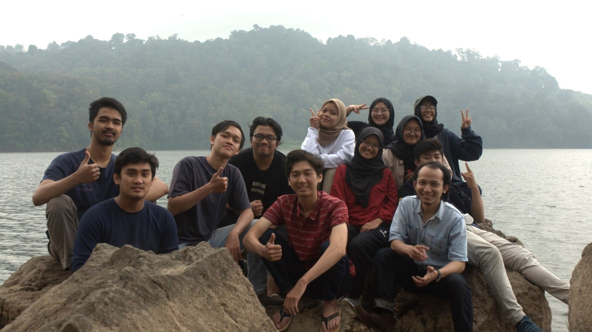
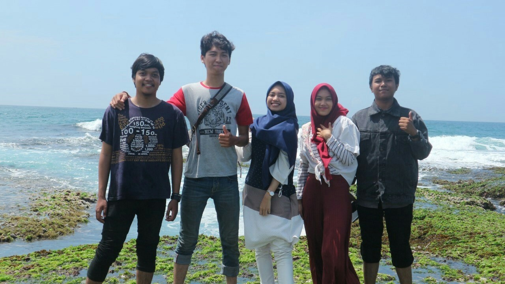
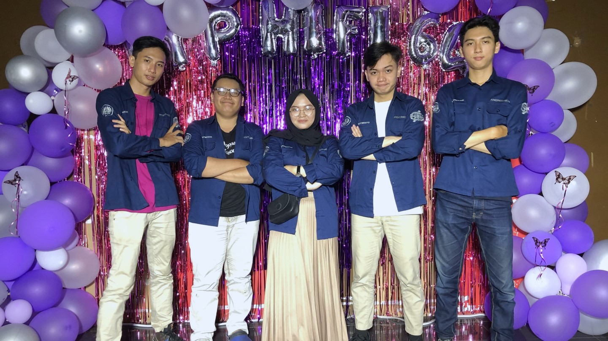

SELAYANG PANDANG
Menggapai Impian dengan Tekad Kuat dan Semangat Pantang Menyerah
Selamat datang di website saya, di sini Anda akan menemukan cerita dan pengalaman hidup saya. Saya percaya bahwa setiap orang memiliki cerita yang unik, dan saya ingin berbagi cerita saya dengan Anda. Melalui website ini, saya ingin menginspirasi Anda untuk menemukan arti hidup Anda sendiri dan meraih kesuksesan yang Anda impikan.
Saya memiliki banyak pengalaman dan keahlian yang ingin saya bagikan dengan Anda, dari perjalanan hidup saya hingga keterampilan dan pengetahuan yang saya miliki. Saya juga menyediakan konten edukatif yang dapat membantu Anda meningkatkan keterampilan dan pengetahuan Anda.
Saya percaya bahwa hidup harus diisi dengan kebahagiaan dan kesuksesan, dan saya ingin membantu Anda mencapai tujuan Anda. Jadi, bergabunglah dengan saya dan mari kita menjalani perjalanan hidup yang penuh dengan makna dan kebahagiaan."
PROFIL
Nama
Tempat/Tanggal Lahir
Profesi
Motto Hidup
: Surya Satria Hidayat
: Bandung, 19 November 2000
: Software Engineer
: Jalankan hidup sebaik mungkin!
GALERI



